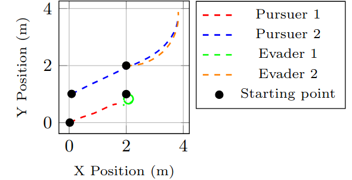

Multi-robot systems are used in various fields such as warehouse management and manufacturing. In addition to the challenges faced by a single robot, task assignment emerges as a key problem that must be addressed when solving multiple tasks with multiple robots. One of the main criteria for evaluating multi-robot systems is their ability to operate effectively in real-world and dynamic environments. In certain scenarios, the true information about tasks and robots may be unknown, requiring methods that can operate with noisy data and handle uncertainty.
In this paper, we propose a fully distributed framework, called GBPTA, for coordinating multiple robots to solve the multi-robot multi-task allocation problem using Gaussian Belief Propagation (GBP). The proposed framework is applied to solve well-known problems such as pursuit-evasion (PE) and package pickup and delivery. GBPTA can operate in different environments and under varying communication radii. Moreover, the proposed approach is capable of handling problems where multiple features need to be considered for task allocation. Through various simulations and hardware experiments, we demonstrate that GBPTA can assign tasks to robots in a way that is close to the optimal solution. Despite being fully distributed, it outperforms other distributed approaches and reduces the assignment utility by 4.3% compared to other techniques and is better than all compared distributed approaches.
Real-world robot experiments demonstrating GBPTA in action.
Example pursuit–evasion experiment results and visualizations.
Package pickup & delivery experiment video.